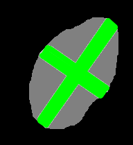

RANO2.0-assist
The RANO2.0-assist is an interactive tool for Response Assessment in Neuro-Oncology (RANO). It is based on the RANO 2.0 guidelines and is designed to assist in the evaluation of glioma. The tool is implemented as a 3D Slicer extension and provides a user-friendly interface for annotating and measuring tumor response in MRI scans. The pipeline includes the following steps:
Automatic Segmentation: The tool uses deep learning models to automatically segment the tumor regions in the MRI scans.
Lesion Matching: Lesions are matched across different time points to assess changes longitudinally.
Automatic 2D Measurements: The tool provides automatic measurements of the segmented tumor regions, including the calculation of the bidimensional product.
Manual Adjustments: Users can manually adjust the automatically placed line pairs, add new line pairs, and remove unwanted ones.
Response Assessment: The tool provides a summary of the measurements and allows users to assess the response according to the RANO 2.0 guidelines, considering the bidimensional product as well as clinical criteria such as steroid use and clinical status.
Report creation: The tool generates a report summarizing the measurements and response assessment, which can be saved in PDF format.
Installation
RANO2.0-assist can be installed as a local 3D Slicer extension, or it can be run in a Docker container. The Docker container includes all the necessary dependencies and can be run on any machine with Docker installed that supports GPU acceleration. The local installation requires 3D Slicer and the necessary Python packages to be installed.
Local installation
Requirements
3D Slicer (tested with version 5.8.1)
PyTorch (tested with version 2.4)
numpy (tested with version 2.0.2)
scikit-image (tested with version 0.24.0)
numba (tested with version 0.60.0)
pytorch (tested with version pytorch-ignite 0.5.2)
ANTsPy (tested with version 0.5.4)
MONAI (https://github.com/aaronkujawa/MONAI/tree/rano)
Segmentation models
The segmentation models need to be downloaded from (TODO: add link to Zenodo models) and placed in the following directory:
dynunet_pipeline/data/tasks
Test data
The test data is also available on Zenodo (TODO: add link to Zenodo test data). The test data should be placed in the following directory:
data/input_data
Installation with Docker
For Docker installation, follow instructions here: docker/README.md.
Usage
Start 3D Slicer by clicking on the Slicer symbol:

Start the RANO annotation plugin by clicking on the following symbol in the menu: 
Select the patient and time points in the Test Cases Box and click Load

This will load all required scans in the “Inputs” box
Automatic segmentation: make sure the “Affine registration” checkbox is checked and the Input is skull-stripped checkbox is unchecked. Select the model “task4001” and “Create new segmentation” under “Output Segmentation”:

Click “Calculate Segmentation” to run the segmentation model.
In the “Automatic 2D Measurements” box choose one of the predicted segments into which the orthogonal line pairs are to be placed: